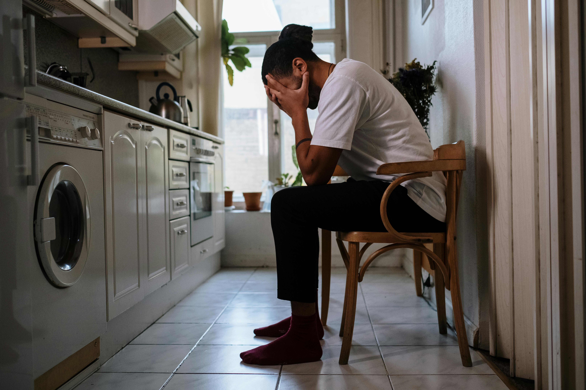

Dad's Crib
Food
How to prepare a weekly meal plan?

John Deere
05/04/2024
John loves music. He plays on a worldwide known indie rock band but his biggest
projectis to be a father of two.
Parenting is all about supressing the needs of your family. One of the most difficult part is to antecipate future necessities and plan ahead. Meals are part of this problem, as you'll need to plan before the groceries you need to cook them later for example.

Creating a proper plan can avoid stress during the week meals
One trick that I use goes as follows: every sunday me and my wife define the meals for the week by picking randomly pieces of papers that contain one recipe from our "meals jar". So we pick 10 papers and then create a shopping list based on those 10 meals.